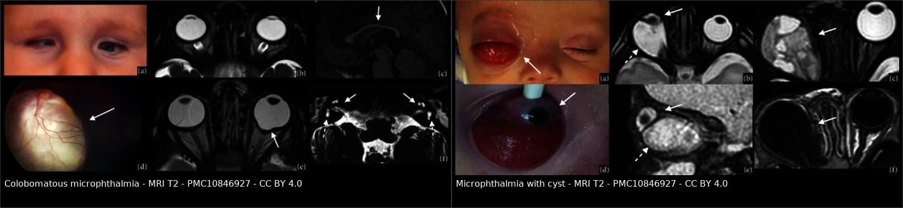
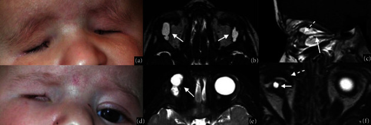
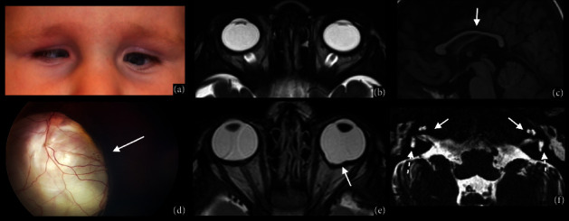
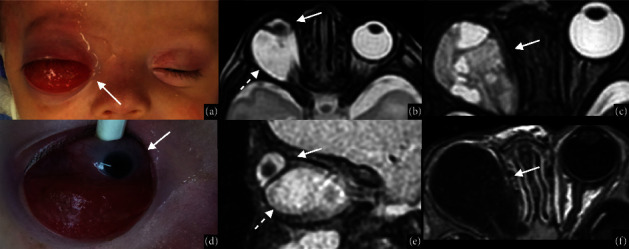

415 — Phổ nhãn cầu nhỏ – coloboma (microphthalmia–anophthalmia–coloboma, MAC): đọc MRI hốc mắt trên một mắt "bé mà vẫn còn cứu" / The MAC spectrum
Tags: pattern:nhan-cau-nho pattern:khong-co-nhan-cau pattern:khuyet-hac-vong-mac pattern:nang-hong-mat vung:mat vung:nhan-cau vung:tre-em score:Ida-Mann score:Gopal protocol:MRI-hoc-mat protocol:B-scan
Mức chắc chắn (certainty): tổng hợp y văn (literature synthesis) — tổng hợp 2 bài tổng quan mở (J Ophthalmol 2024 pictorial review MRI; Eye 2021 review coloboma) + 1 review quản lý sơ sinh (Ital J Pediatr 2025); số liệu do nhóm đối chiếu chéo giữa các bài, hình thái lấy từ chú thích Fig gốc.
1. Tổng quan — vì sao "một mắt bé" lại là ba bệnh khác nhau trên cùng một phổ
- Bệnh học (pathology): ba thực thể nhãn cầu nhỏ (microphthalmia), không nhãn cầu (anophthalmia) và khuyết hắc–võng mạc (chorioretinal coloboma) là ba mức của cùng một phổ bất thường tạo mắt (MAC spectrum), do tổn thương rơi vào các thời điểm khác nhau của quá trình tạo mắt: tổn thương rất sớm (tuần 3–4) → không nhãn cầu; muộn hơn → nhãn cầu nhỏ; tuần thứ 5–7 (khi đường ráp bào thai — embryonic/optic fissure phải đóng từ dưới lên) → coloboma điển hình (typical coloboma), vì mép dưới–mũi của nhãn cầu còn hở, hắc mạc – võng mạc – mống mắt không khép kín.
- Ngưỡng định lượng phải nhớ (đo bằng siêu âm A/B hoặc MRI):
- Nhãn cầu nhỏ: đường kính giác mạc < 10 mm và đường kính trước–sau < 20 mm, hoặc trục nhãn cầu < −2 SD so với tuổi, hoặc < 2/3 đường kính bình thường, hoặc < bách phân vị 5.
- Nanophthalmos (thể nặng, không kèm bất thường toàn thân): trục nhãn cầu < 18 mm + giác mạc nhỏ (microcornea).
- Coloboma chiếm 2% mọi dị tật bẩm sinh; không nhãn cầu 3/100.000 trẻ sinh sống; nhãn cầu nhỏ 14/100.000; gộp hai thể 30/100.000; coloboma 2–19/100.000; dị tật mắt bẩm sinh gây 15–20% ca mù ở trẻ nhũ nhi.
- TẠI SAO phải là MRI, và tại sao tín hiệu lại "đọc được" (vật lý):
- Dịch kính – thủy dịch > 98% là nước → T2 rất sáng, T1 rất tối; đây là "bóng đèn" để đo thể tích/đường kính nhãn cầu trên T2.
- Thể thủy tinh giàu protein cấu trúc → T1 sáng, T2 tối; nhãn cầu nhỏ thường kèm thể thủy tinh to tương đối (relatively hard lens), nên trên T2 nhãn cầu nhỏ trông "đặc" hơn mắt lành — dễ đọc nhầm là khối.
- Hắc mạc (choroid) – thể mi: T1 sáng, T2 tối, ngấm mạnh sau tiêm → mất "viền hắc mạc" ở đáy coloboma chính là dấu chốt: đáy coloboma là xơ hóa (fibrous tissue), không có hắc mạc/mạch máu, nên không ngấm thuốc và không có lớp trung gian T1 sáng.
- Củng mạc – giác mạc (collagen) → tối trên cả T1 và T2; vôi hóa (nếu có) → tối trên mọi chuỗi xung và không có trên MRI đủ nhạy bằng CT — vì thế MRI không dùng để tìm vôi hóa (khác retinoblastoma: vôi hóa thô là chốt của RB trên CT).
- Nang dịch trong hốc mắt: T2 sáng đồng nhất, T1 tối, thành mỏng, không ngấm — nếu có thành dày/ngấm/nốt trong nang thì phải nghĩ tổn thương khác (u,viêm).
- Vì sao CT vẫn có chỗ: CT liều thấp, không cần gây mê dài để xác nhận không có nhãn cầu và vôi hóa, nhưng MRI là chuẩn cho mô mềm hốc mắt, nang – nhãn cầu có thông nhau không, và não – thể chai – tuyến yên (tổn thương đường giữa).
- Lâm sàng – điều trị (định hướng cho bác sĩ CĐHA): mục tiêu đầu đời là kích thích hốc mắt phát triển (conformer/expansion prosthesis) + chỉnh khúc xạ – điều trị nhược thị cho mắt còn chức năng; mắt nhỏ nặng/không nhãn cầu → ghép mỡ–da (dermis-fat graft) + implant hốc mắt khi lớn. Với coloboma, điều trị xoay quanh biến chứng (bong võng mạc, đục thể thủy tinh, CNV) chứ không "sửa" được dị tật.
2. Mẫu hình + chẩn đoán phân biệt theo vị trí (gamut)
- Mẫu hình A — "không thấy nhãn cầu / nhãn cầu rất bé": anophthalmia thật (không có mô mắt), nhãn cầu nhỏ nặng (severe microphthalmia) — trên MRI vẫn thấy mô nhãn cầu dẹt phía sau; nang bẩm sinh mắt (congenital cystic eye) — nang nhiều thùy không có nhãn cầu bên trong; nhãn cầu nhỏ + nang (microphthalmia with cyst) — có nhãn cầu nhỏ VÀ nang thông với nó.
- Mẫu hình B — "nhãn cầu nhỏ + khuyết ở cực sau/dưới": coloboma điển hình (khuyết hắc–võng mạc, thường dưới–mũi, có thể tới đĩa thị), coloboma đĩa thị đơn độc, Morning Glory (loa đĩa thị + mô thần kinh đệm trung tâm), staphyloma quanh đĩa (peripapillary staphyloma) — đĩa thị BÌNH THƯỜNG nằm trong hõm lồi ra sau.
- Mẫu hình C — "khuyết mống mắt đơn độc": coloboma mống mắt điển hình (dưới–mũi) vs coloboma không điển hình (do chấn thương/mổ, vị trí bất kỳ) vs đứt cơ vòng mi do chấn thương (bờ rách, không có "notch" bẩm sinh).
- Mẫu hình D — "coloboma + bất thường toàn thân": CHARGE (coloboma + tim + atresia choanae + chậm phát triển + bất thường sinh dục + tai/điếc, CHD7); Aicardi (coloboma + co giật + thể chai), Joubert, Walker–Warburg, trisomy 13/18, 16q22 deletion; hội chứng COACH/CHARGE-like.
- Gamut theo vị trí tổn thương (điều tra theo giải phẫu):
- Tiền phòng – mống mắt: coloboma mống mắt, dính mống mắt – thể thủy tinh, glaucoma thứ phát (góc loạn sản).
- Cực sau – đĩa thị: coloboma hắc–võng mạc, coloboma đĩa, Morning Glory, staphyloma sau.
- Hốc mắt: nang (với/không nhãn cầu), hẹp hốc mắt do nhãn cầu nhỏ, mô mỡ – cơ trực teo kèm.
- Não – đường giữa: thể chai, hố sau, tuyến yên (khi coloboma + hội chứng) — đây là phần bắt buộc của MRI "mắt" ở trẻ có coloboma.
3. Bảng so sánh phân biệt (ma trận đối chiếu)
| Thực thể (entity) | Hình ảnh điển hình | Chốt vào (rule-in) | Chốt loại (rule-out) | Gợi ý xác nhận |
|---|---|---|---|---|
| Nhãn cầu nhỏ đơn thuần (simple microphthalmia) | Nhãn cầu đồng dạng nhưng nhỏ: T2 sáng đều, không khuyết, không nang; AP < 20 mm, CD < 10 mm | Nhãn cầu nhỏ + hình dạng còn tròn đều + không có khuyết cực sau | Có khuyết cực sau/dưới hoặc nang thông với nhãn cầu → thể phức tạp | Siêu âm A/B đo trục; MRI T2 đo 3 chiều; so mắt lành |
| Nhãn cầu nhỏ – coloboma (complex) | Nhãn cầu nhỏ + khuyết cực sau rộng, hõm lồi ra sau, mất viền hắc mạc T1 sáng tại đáy, không ngấm thuốc ở đáy | Khuyết cực sau + mất liên tục củng mạc – hắc mạc + đĩa thị nằm trong/ngoài khuyết | Khuyết thành mỏng đều, có ngấm → nghĩ nang/khối | MRI T1 ± tiêm + T2; OCT/afg nếu môi trường trong |
| Nhãn cầu nhỏ + nang | Nhãn cầu nhỏ DẸT + nang T2 rất sáng ở sau/dưới, cổ nang thông với nhãn cầu | Thấy cổ nang nối với củng mạc trên T2 mọi bình diện | Không thấy nhãn cầu trong nang → nang mắt bẩm sinh | MRI T2 mỏng (1–2 mm), B-scan |
| Nang mắt bẩm sinh (congenital cystic eye) | Nang nhiều thùy, không có mô nhãn cầu bên trong, không thấy thể thủy tinh | Không có nhãn cầu + nang nhiều thùy | Có mô nhãn cầu dẹt ở thành nang → nhãn cầu nhỏ + nang | MRI + mô bệnh sau cắt |
| Coloboma hắc–võng mạc | Đáy trắng/xơ không có hắc mạc, bờ có sắc tố, mạch máu đi qua đáy, thường dưới–mũi | Đáy xơ không ngấm + mất lớp hắc mạc + bờ sắc tố + liên quan đĩa thị theo phân loại | Đáy có khối ngấm thuốc/nốt → nghĩ CNV/u; vôi hóa thô → RB | Soi đáy mắt + OCT; MRI để loại u/nang |
| Morning Glory | Loa đĩa thị hình phễu, búi mô đệm ở trung tâm, mạch máu tỏa thẳng, hõm sâu ra sau | Phễu đĩa thị + búi glia trung tâm + mạch tỏa thẳng | Đĩa bình thường trong hõm → staphyloma quanh đĩa | MRI T2 (phễu + mất liên tục củng mạc), B-scan |
| Staphyloma quanh đĩa | Đĩa thị bình thường nằm trong hõm lồi ra sau rộng, không có "notch" mống mắt | Đĩa nguyên vẹn + hõm quanh đĩa | Đĩa khuyết/mất mô đĩa → coloboma đĩa | MRI/soi đáy mắt; OCT đĩa |
| Coloboma mống mắt | "Notch" bờ đồng tử phía dưới–mũi, có thể thấy xích đạo thể thủy tinh; thường không thấy trên MRI | Khuyết mống mắt bẩm sinh đúng vị trí + bờ nhẵn | Bờ rách, không đều, có tiền sử chấn thương → đứt cơ vòng mi | Sinh hiển vi; MRI chỉ để tìm tổn thương phối hợp |

Trái: nhãn cầu nhỏ hai bên, cực sau lồi ra thành khuyết (mũi tên), trên T2 còn thấy mất liên tục củng mạc ở cực dưới trên mặt cắt vành. Phải: nhãn cầu nhỏ dẹt + nang lớn phía sau–dưới, cổ nang thông với nhãn cầu. Nguồn: J Ophthalmol 2024 (PMC10846927) Fig. 3 và Fig. 6, CC BY 4.0. Ảnh ghép letterbox, không crop.Ba dấu hiệu định vị then chốt (đọc theo thứ tự)
- Đếm nhãn cầu: có hai nhãn cầu không? Không → anophthalmia / nang mắt bẩm sinh (phân biệt bằng "có mô nhãn cầu trong nang hay không").
- Đo cực sau: cực sau lồi ra thành túi hay khuyết mất mô? Lồi + thành mỏng + thông với dịch kính = coloboma/nang; hõm quanh đĩa, đĩa nguyên = staphyloma.
- Tìm viền hắc mạc T1 sáng: viền này mất ở đáy coloboma và còn ở staphyloma — đây là dấu rẻ tiền nhưng ổn định nhất trên MRI không tiêm.
4. Protocol chụp + hệ phân độ
4.1. Protocol MRI hốc mắt trẻ (theo pictorial review 2024)
- Chuỗi xung tối thiểu: T2 2D lát mỏng (trục + vành) + T1 trước tiêm + T1 fat-sat sau tiêm; thêm T2 3D CISS/FIESTA khi cần thấy dây thần kinh thị – nang – cổ nang.
- Thông số: ảnh 2D trong mặt phẳng hốc mắt đặt khe lát tối thiểu (minimal slice gap), ma trận 448–512, FOV ~18–20 cm → độ phân giải trong mặt phẳng ~0,4 mm.
- Vùng phủ: trục từ khẩu cái cứng tới ~1 cm trên hốc mắt; vành từ thể thủy tinh tới giữa cầu não; sagittal chếch theo đường đi dây thần kinh thị.
- Bắt buộc chụp kèm não khi có coloboma/hội chứng: tìm bất thường đường giữa (thể chai, tuyến yên, hố sau) — vì 15–30% coloboma có CHARGE và nhiều hội chứng đường giữa đi kèm.
- Siêu âm (B-scan) trước MRI: đo trục nhãn cầu, xác nhận nang, phân biệt mắt nhỏ với không nhãn cầu; không cần gây mê.
- CT: chỉ khi cần xương hốc mắt (hẹp hốc, implant) hoặc vôi hóa; không dùng CT làm chuẩn mô mềm.
4.2. Phân độ coloboma hắc–võng mạc
- Phân loại Ida Mann (1–7, theo mức lan tới đĩa thị và vị trí): type 1 coloboma lan lên trên đĩa thị; type 2 lan tới bờ trên đĩa; type 3 dưới bờ dưới đĩa; type 4 chỉ đĩa thị; type 5 dưới đĩa, võng mạc trên và dưới bình thường; type 6 chỉ có sắc tố ngoại vi; type 7 chỉ ở ngoại vi. Nặng nhất type 1, nhẹ nhất type 6–7.
- Phân loại Gopal (1–6, theo tương quan đĩa thị – coloboma): 1) đĩa ngoài coloboma, bình thường; 2) đĩa ngoài coloboma nhưng loạn sản; 3) đĩa coloboma riêng, coloboma chiếm phần dưới đĩa; 4) đĩa bình thường nằm TRONG coloboma; 5) đĩa coloboma hòa vào coloboma nhưng phần trên đĩa còn rõ; 6) đĩa coloboma hòa hoàn toàn, không nhận ra mô đĩa.
- Nguy cơ bong võng mạc (RD) — con số quyết định theo dõi: tỉ lệ RD trong coloboma hắc–võng mạc 2,4–47,5% (loạt bệnh viện); odds RD tăng 1,147 lần mỗi năm tuổi, và giảm 0,653 lần mỗi bậc Ida Mann (coloboma càng nhẹ càng ít RD).
- Cơ chế RD (để hiểu vì sao "laser dự phòng" khó): 3 lỗ hổng phối hợp — lỗ rách võng mạc ngoại vi, rách màng trung gian (intercalary membrane, ICM), và toác tại "locus minoris resistentiae" (vùng RPE tận cùng dính chặt lớp võng mạc ngoài ở bờ coloboma). Laser dự phòng quanh bờ coloboma (201 mắt, theo dõi 3 năm, 2 ca vẫn bong) chưa có bằng chứng dài hạn, nhất là khi đĩa thị nằm trong coloboma nên không thể laser kín vòng.
flowchart TD
A[Trẻ có mắt bé / không thấy đồng tử trắng] --> B[Siêu âm B-scan: có nhãn cầu?]
B -->|Không| C[Nang mắt bẩm sinh vs anophthalmia thật]
B -->|Có, nhỏ| D[MRI hốc mắt + não: T2 lát mỏng, T1 ± tiêm]
C --> D
D --> E{Có khuyết cực sau / nang thông với nhãn cầu?}
E -->|Không| F[Nhãn cầu nhỏ đơn thuần: đo trục, theo dõi khúc xạ - nhược thị]
E -->|Có khuyết| G[Coloboma: phân loại Ida Mann 1-7 + Gopal 1-6]
E -->|Có nang| H[Nhãn cầu nhỏ + nang: xác định cổ nang, đánh giá chèn ép hốc mắt]
G --> I{Đĩa thị nằm trong coloboma?}
I -->|Có| J[Nguy cơ RD cao: theo dõi định kỳ, laser không kín vòng]
I -->|Không| K[Theo dõi RD + khúc xạ; laser bờ coloboma cân nhắc từng ca]
D --> L[Luôn đọc não: thể chai, tuyến yên, hố sau]
L --> M{Nghi hội chứng?}
M -->|Có| N[CHARGE / Aicardi / trisomy 13-18: di truyền + tầm soát tim, thính lực, thận, cột sống]
5. Biến thể bình thường và cạm bẫy
- Microcornea ≠ microphthalmos: đường kính giác mạc nhỏ nhưng nhãn cầu bình thường là một thực thể riêng (thường kèm giác mạc phẳng – cornea plana, glaucoma góc hẹp); không được suy ra "mắt nhỏ" chỉ từ giác mạc nhỏ — phải đo trục nhãn cầu.
- Đĩa thị "giả coloboma": staphyloma quanh đĩa và đĩa loạn sản do cận thị cao trông như coloboma; chốt loại = đĩa thị còn nguyên vẹn, mô đĩa bình thường, hõm nằm quanh đĩa chứ không xuyên đĩa.
- Coloboma đĩa thị đơn độc dễ bị đọc là "glaucoma teo đĩa": coloboma đĩa hình tròn đồng tâm + viền quanh đĩa mỏng bất thường rất giống teo đĩa do glaucoma; phân biệt bằng bờ đĩa lệch tâm/khuyết mô đĩa, không có mất sợi thần kinh theo dải, và bối cảnh tuổi (trẻ, nhãn áp bình thường).
- Mắt nhỏ làm "giả khối": thể thủy tinh T2 tối trong nhãn cầu nhỏ dễ bị đọc là khối đặc/u; so với mắt lành và dùng T1 sáng của thể thủy tinh để khẳng định.
- Nang "vô tội" nhưng chèn hốc mắt: nang lớn đẩy lệch mô hốc mắt và hạn chế phát triển xương hốc mắt — nang càng lớn càng sớm thì càng phải can thiệp sớm; đây là lý do MRI có giá trị điều trị, không chỉ chẩn đoán.
- Cạm bẫy "thỏa mãn tìm kiếm": đã thấy coloboma là dừng — trong khi việc đọc não (thể chai, tuyến yên, hố sau) mới là phần thay đổi tiên lượng (CHARGE, Aicardi).
- Co giật + coloboma ở bé gái: nghĩ Aicardi (thể chai không có/loạn sản + co giật kháng trị) — MRI não là chốt, không phải MRI mắt.
6. Tự lượng giá — Blind Quiz
Ca 1 — Bé trai 1 tuổi, hai hốc mắt trũng, không thấy lòng đen. Nhìn ảnh lâm sàng trước, đoán rồi mới mở đáp án.

- Gợi ý: không sờ thấy cầu mắt; có nang dưới kết mạc?
- Hỏi: có bao nhiêu nhãn cầu? Cấu trúc T2 sáng phía sau là gì? Chẩn đoán và bước tiếp theo?
Bấm để hiện đáp án (findings + chẩn đoán)
- Findings: hai hốc mắt không có nhãn cầu; trên T2 trục thấy cấu trúc dạng nang hai bên (mũi tên trắng) ở vị trí nhãn cầu; sagittal T1 thấy mô mềm vô định hình (mũi tên chấm) thay cho nhãn cầu.
- Chẩn đoán: anophthalmia hai bên có nang (anophthalmia with cysts) — nang xuất phát từ mô mắt thoái hóa, T2 sáng vì chứa dịch.
- Vì sao: không có mô nhãn cầu → T2 chỉ còn dịch trong nang; đây là đầu cực nặng của phổ MAC.
- Bước tiếp: MRI toàn não (đường giữa, thể chai), tầm soát CHARGE (tim, choanae, thính lực, sinh dục), conformer – giãn hốc mắt sớm.
- Nguồn ảnh: J Ophthalmol 2024 (PMC10846927) Fig. 2, CC BY 4.0.
Ca 2 — Bé trai 1 tuổi, hội chứng vi mất đoạn 16q22, hai mắt nhỏ. Trong 2 mắt, mắt nào "phức tạp"?

- Hỏi: mô tả cực sau hai nhãn cầu trên T2 trục; mặt cắt vành cho thêm gì? Gọi tên thể bệnh.
Bấm để hiện đáp án (findings + chẩn đoán)
- Findings: (a) hai mắt nhỏ, đồng tử hai bên; (b) T2 trục: đường kính trước–sau và ngang giảm hai bên; (e) T2 trục: cực sau mắt trái lồi ra thành túi (mũi tên) — khuyết; (f) T2 vành: mất liên tục củng mạc – hắc mạc ở cực dưới hai bên (mũi tên).
- Chẩn đoán: nhãn cầu nhỏ thể phức tạp có coloboma (colobomatous microphthalmia) hai bên, trên nền hội chứng vi mất đoạn 16q22.
- Vì sao: mép dưới–mũi (đường ráp bào thai) không khép → khiếm khuyết thành củng mạc – hắc mạc → cực sau phình ra; trên MRI mất viền hắc mạc T1 sáng tại đáy.
- Ý nghĩa: thể phức tạp có nguy cơ bong võng mạc và glaucoma cao hơn thể đơn thuần → theo dõi nhãn áp + đáy mắt định kỳ.
- Nguồn ảnh: J Ophthalmol 2024 (PMC10846927) Fig. 3, CC BY 4.0.
Ca 3 — Bé gái 13 ngày tuổi, mắt phải "không có nhãn cầu", có khối đỏ dưới kết mạc. Khối đó là mắt hay nang?

- Hỏi: tìm nhãn cầu và nang; có cổ nang nối hai cấu trúc không? Chẩn đoán phân biệt với "nang mắt bẩm sinh" dựa vào đâu?
Bấm để hiện đáp án (findings + chẩn đoán)
- Findings: (a) khối đỏ dưới kết mạc; (b, e) T2 trục/sagittal: nhãn cầu nhỏ dẹt (mũi tên trắng) kèm nang lớn (mũi tên chấm) thông với nhãn cầu; (d) soi dưới gây mê xác nhận; (c, f) ca đối chiếu nang mắt bẩm sinh: nang nhiều thùy, KHÔNG có nhãn cầu bên trong.
- Chẩn đoán: nhãn cầu nhỏ kèm nang (microphthalmia with cyst) mắt phải.
- Chốt vào: thấy cổ nang nối nang với củng mạc trên T2 nhiều bình diện.
- Chốt loại nang mắt bẩm sinh: không có mô nhãn cầu/thể thủy tinh bên trong nang, nang nhiều thùy.
- Nguồn ảnh: J Ophthalmol 2024 (PMC10846927) Fig. 6, CC BY 4.0.
Bài liên quan chéo
- 400 – Tổng quan Mắt & thị giác
- 411 – Siêu âm nhãn cầu (B-scan đo trục, phân biệt mắt nhỏ/nang)
- 412 – U trong nhãn cầu (vôi hóa thô = retinoblastoma, không phải coloboma)
- 413 – PFV/PHPV: dây xơ dịch kính + nhãn cầu nhỏ
- 414 – Glaucoma & nhãn cầu nhỏ trong PFV (mắt nhỏ + tăng nhãn áp)
Không dùng để chẩn đoán độc lập khi chưa có người hướng dẫn.